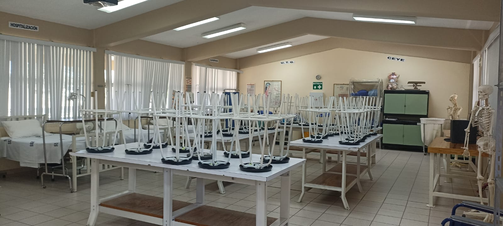
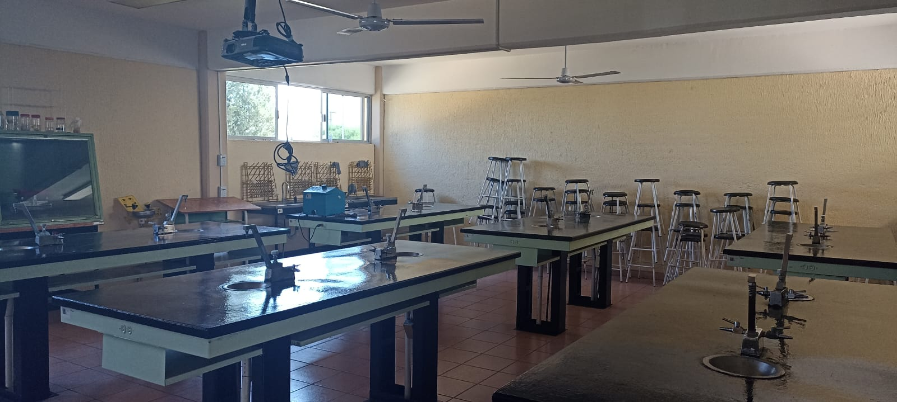
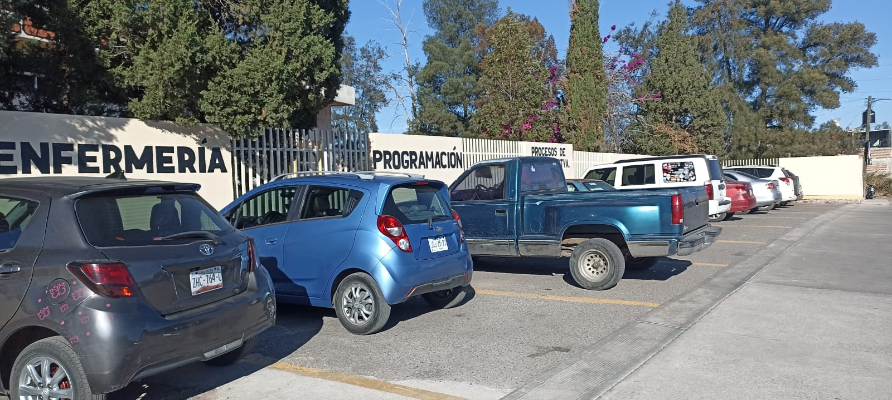
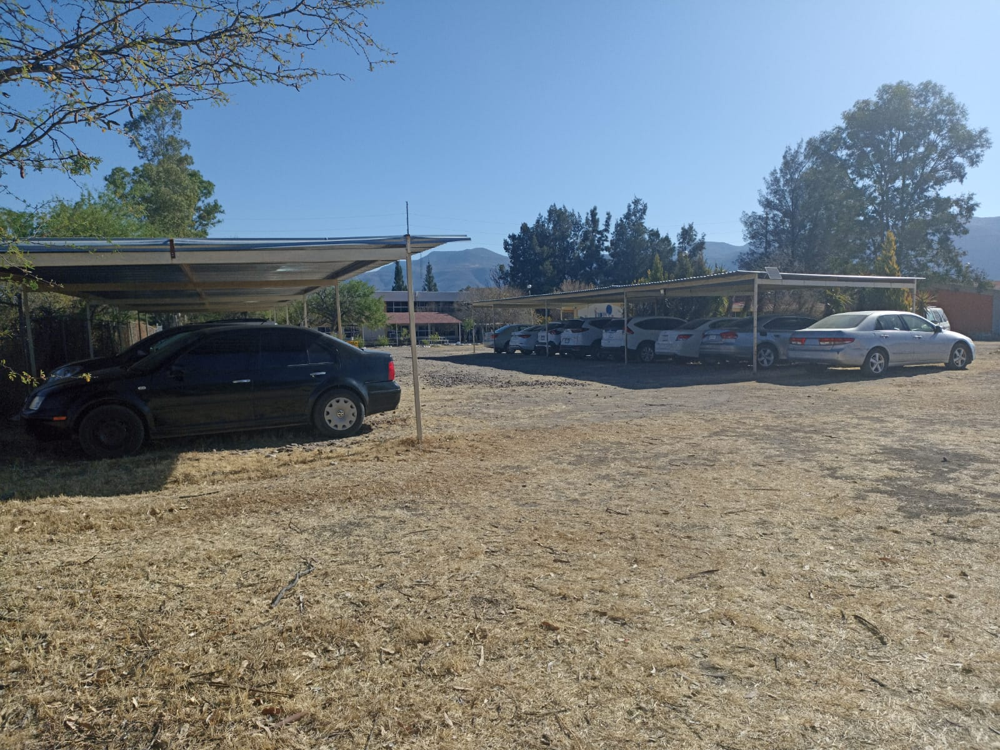
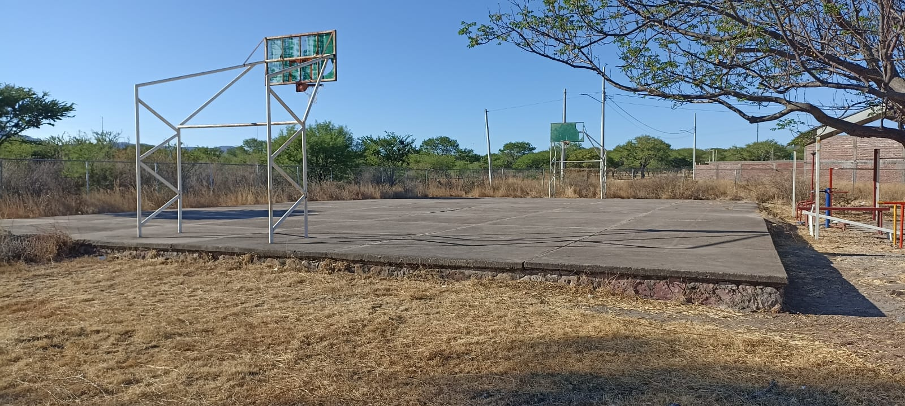
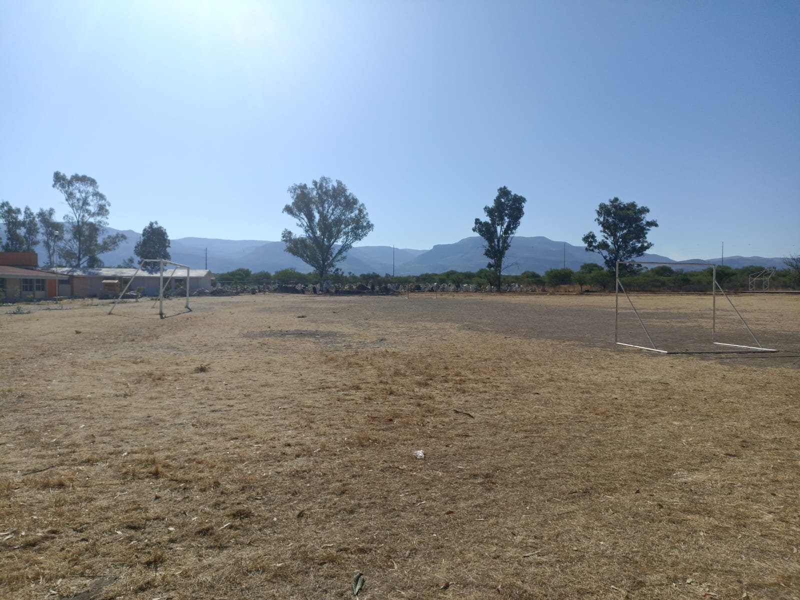
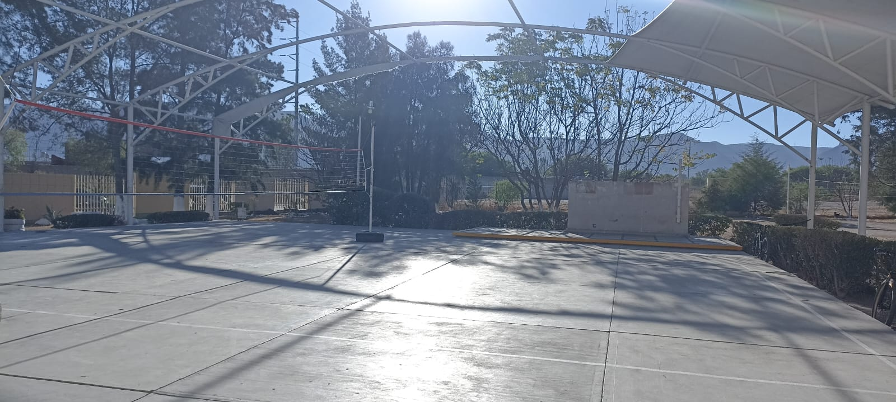
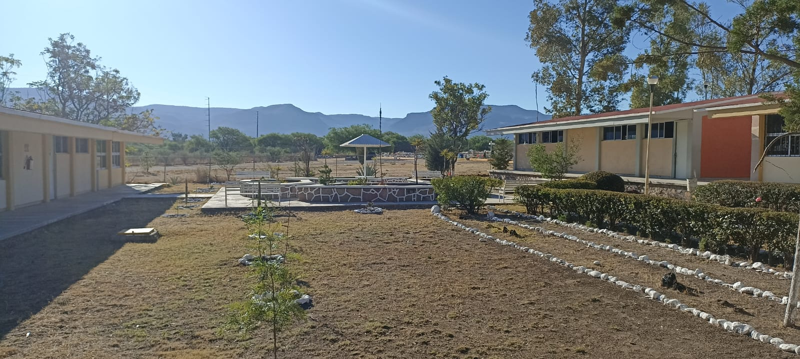
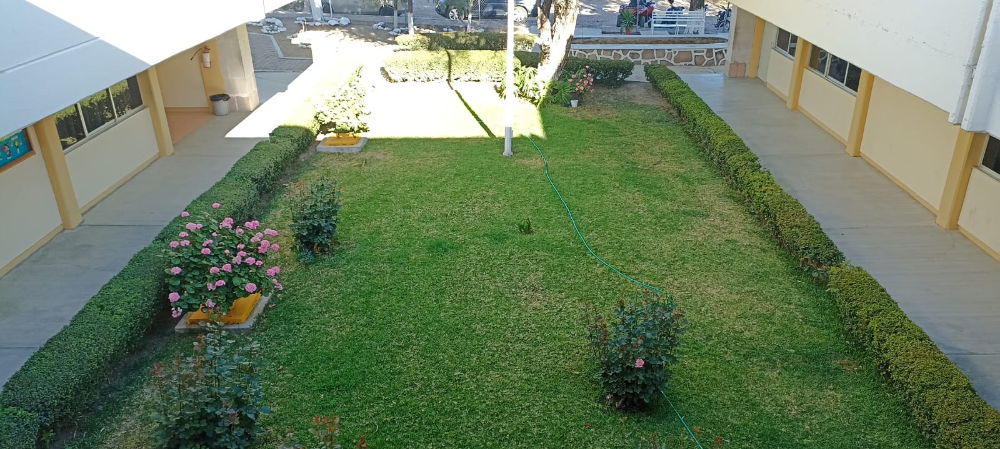
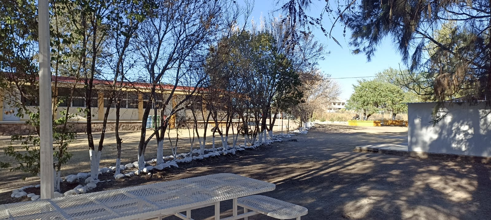

Las instalaciones cuentan con 18 salones acondicionados para el uso de los estudiantes. Además de esto, se dispone de un laboratorio de idiomas, un centro de cómputo para los estudiantes de programación, un taller de electricidad para los alumnos de esa especialidad y un laboratorio de enfermería destinado a las prácticas del área de salud. También se cuenta con un laboratorio de usos múltiples, utilizado para las prácticas realizadas en las materias de Química y Biología.


Se cuenta con tres estacionamientos en las instalaciones: dos externos y uno interno. Uno de los estacionamientos exteriores está destinado a automóviles, con 10 cajones exclusivos. El segundo es un espacio amplio habilitado para el estacionamiento de motocicletas. En el interior de las instalaciones se encuentra un estacionamiento con 14 cajones exclusivos para autos.


Las instalaciones cuentan con una cooperativa donde se vende gran variedad de alimentos y bebidas, ademas tambien cuenta con 6 mesas donde los alumnos pueden disfrutar sus alimentos.
Deportes
Las instalaciones tambien cuentan con espacios para la formacion deportiva y fisica de sus alumnos como una cancha de basquetbol, otra de futbol y otra de voleibol asi como maquinas para que los alumnos realizen ejercicio.



Cada cancha esta equipada con lo necesario para el uso por parte de los alumnos como balones, red, canastas, porterias asi como un maestro encargado de la materia de formacion deportiva.
Areas Verdes
Algo tambien importante de recalcar son las numerosas areas verdes con las que cuentan las instalaciones, y lo importantes que son. Estas no solo ayudan a mejorar la estetica de la escuela sino tambien ayudan a proporcionar oxigeno y sombra a los cientos de estudiantes que cursan en esta preparatoria.


